4. Monitor AI
Info
A key component of a Governed MLOps solution is the ability to monitor AI models for accuracy, fairness, explainability and drift. These capabilities deliver trustworthy AI which business leaders can safely adopt in their business processes and customer engagements.
With multiple client engagements, we have found that having the confidence to trust AI models is just as important, and sometime even more important, than the performance of the AI models. Watson OpenScale, a component of Watson Studio and Cloud Pak for Data, is IBM’s solution to deliver trustworthy AI and enable monitoring of AI models for fairness, explainability and drift.
In this lab you will learn how to leverage Watson OpenScale to monitor the churn prediction model we previously deployed to Watson Machine Learning.
Db2 connection details
Later in this lab, you're going to provide OpenScale the training data of the model. Watson OpenScale supports reading training data from a CSV file, from Db2, and from Cloud Object Storage (COS). The training data in this workshop is stored in CP4D's Db2.
Info
Review Why does OpenScale need access to my training data for more details on why the training data is needed. Some clients prefer not to share their training data and OpenScale supports that by requesting the clients provide training data statistics information which they can obtain by running through a custom notebook that is available on github.
-
Go to menu Data > Databases.
-
Click the menu of the Db2 database, then select Details.
-
Copy the Deployment id which you'll use in the next step. In this example, it's db2oltp-1712170077943241.
Enabling monitoring for our model
-
Go to menu Deployments:
-
Open the churnUATspace space where you deployed your initial AutoAI-generated Model for testing.
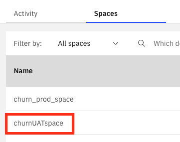
-
In the Deployments tab, open the user0_autoai_churn one. We're going to monitor this deployed model.
-
Go the Evaluations tab and click Configure OpenScale evaluation settings.
Warning
If you see the following message, click Associate a server instance:
The following menu will appear. You're going to configure the monitors in the following section.
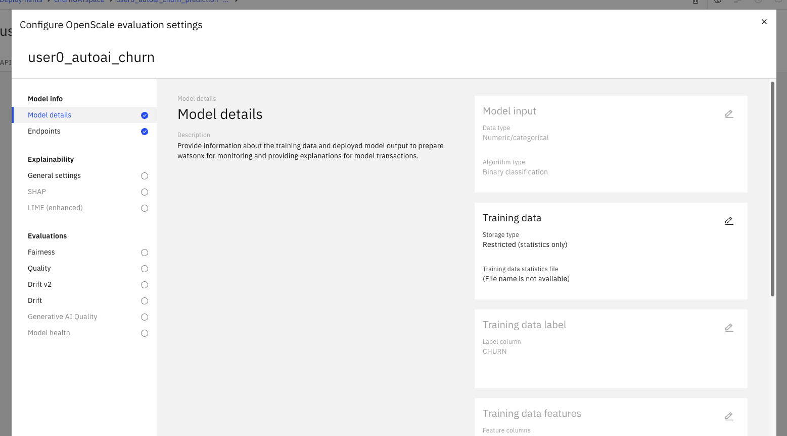
Training data
-
Click on the pencil next to Training data. We're going to provide a connection to our training data.
-
Set the following options:
- Storage type: Database or cloud storage
- Location: Db2
- Credential values: Enter manually
- Hostname: c-<YourDeploymentID>-db2u-engn-svc (where <YourDeploymentID> is the Db2 Deployment ID you got in the previous step. In this example, the hostname would be c-db2oltp-1712170077943241-db2u-engn-svc)
- Use SSL: False
- Port: 50000
- Database: BLUDB
- Username: Your assigned CP4D username
- Password: Your assigned CP4D password
Then click Connect.
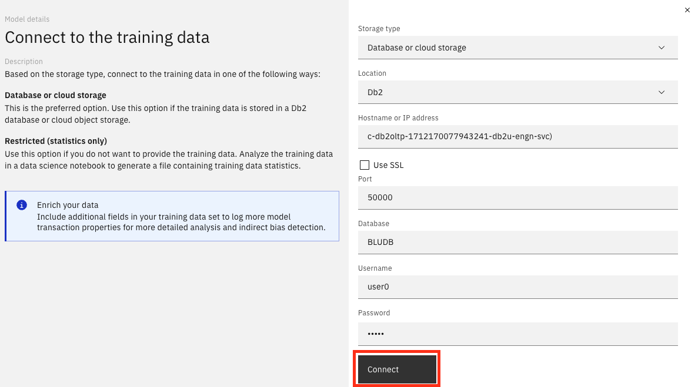
-
Once the connection is succesful, select:
- Schema: CUSTOMER
- Table: CUSTOMER_TRAINING_DATA
Then click Next
-
The label column was automatically selected. We're predicting CHURN. Click Next
-
For the feature columns, accept the default which selects all the features. Click Save.
The training data has been loaded to OpenScale.
Configure Quality
Let's configure the Quality controls for our model.
Info
Watson OpenScale can monitor the Quality metric which measures the model’s ability to correctly predict outcomes that match labeled data.
-
Select Quality from the Evaluations section. Then click the pencil icon.
-
Specify the Threshold value for Area under ROC to be 0.9 and click Next. This means that when the Area under ROC is less than 0.9, the quality monitor will flag an alert.
-
Change the Minimum sample size to 100. In production, you should use larger sample sizes to make sure they’re representative of the requests the model receives. Click Save.
Configure Fairness
Let's configure the Fairness controls for our model.
Info
In the fairness monitor, you specify to Watson OpenScale which features to monitor and what are the favourable outcomes. The Watson OpenScale fairness monitor determines whether outcomes that are produced by your model are fair or not for monitored group. When fairness monitoring is enabled, it generates a set of metrics every hour by default. You can generate these metrics on demand by clicking the Check fairness now button or by using the Python client.
Watson OpenScale automatically identifies whether any known protected attributes are present in a model. When Watson OpenScale detects these attributes, it automatically recommends configuring bias monitors for each attribute present, to ensure that bias against these potentially sensitive attributes is tracked in production.
Currently, Watson OpenScale detects and recommends monitors for the following protected attributes (sex, ethnicity, marital status, age, zip code).
-
Select Fairness in the Evaluations section and click the pencil icon to configure the fairness monitor.
-
Select Configure manually then click Next.
-
Next, select the favorable outcomes, specify F (false) as Favorable value (client is not going to churn), and T (true) as Unfavorable value. Then click Next.
-
Next, select the Minimum sample size to be 100. In production, you may want to select a larger sample size to make sure it is representative.
-
Keep the default selections set to Disparate impact. Then Click Next
-
Leave the default values and click Next
-
OpenScale automatically detected the features GENDER and AGE as candidates for being monitored for fairness by analyzing the training data. Click Next.
-
For the AGE feature, you can specify the reference and monitored groups. Again, Watson OpenScale automatically recommends which group should be the reference and which group(s) should be monitored by analyzing the training data. Accept the default selections by Watson OpenScale. Click Next
-
Set the fairness alert threshold for AGE to 95 which effectively indicates that OpenScale will raise an alert when the model predicts a favorable outcome for the monitored group 95% of the times less than a favorable outcome for the reference group.
Info
Check the How it works section in the documentation to better understand how fairness of the model is computed by OpenScale.
-
Next, for the GENDER feature, specify the reference and monitored groups as F Monitored and M Reference. Then click Next.
-
Specify the fairness alert threshold to be 95 and click Save.
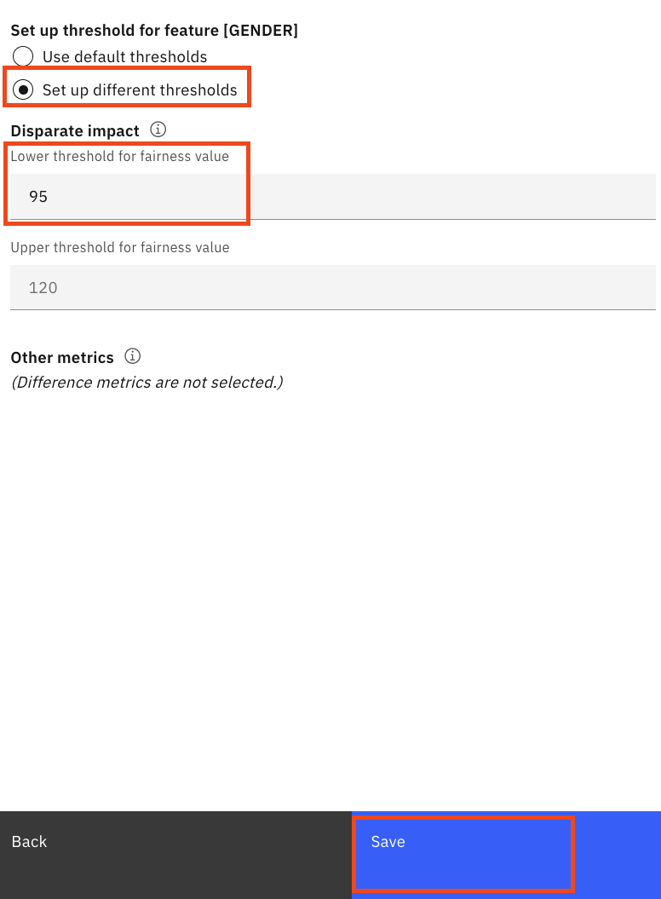
Optional
You could also configure the Drift monitors. For details on Drift monitors, check the Drift documentation page.
Configure Drift
-
Go to the Drift v2 tab. Then click the pencil icon to configure it.
-
In this case, we'll use OpenScale directly to calculate possible Drift. Select Compute in Watson OpenScale and click Next.
-
Leave the default values. Feel free to read the description of these thresholds. Click Next.
-
In this case, all features will be considered important to detect drift. Select all features and click Next.
-
For the root cause analysis, select the following features:
- AGE
- ESTINCOME
- GENDER
- RATEPLAN
- USAGE
Then click Next.
-
Click Save.

Configure Explainability
-
Go to the General settings option under the Explainability section. Then click the pencil icon to configure it.
Info
Two different methods are available for explanations: Shapley Additive Explanations (SHAP) or Local Interpretable Model-agnostic Explanations (LIME).
As described in the hint that appears when you click the Information box, SHAP often provides more thorough explanations, but LIME is faster.
-
For this workshop, we'll use the LIME explanation method as it's faster. Click Next.
-
All features will be analyzed in this case. Click Save
Evaluating the model
Now that the model monitors have been configured, you can run an evaluation of the model.
-
Click the X button to close the Configure monitors window.
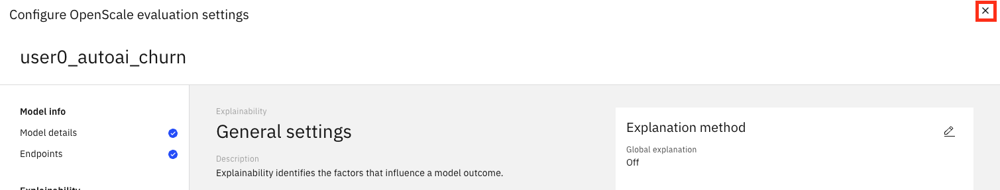
-
Click on the Actions button then Evaluate now.
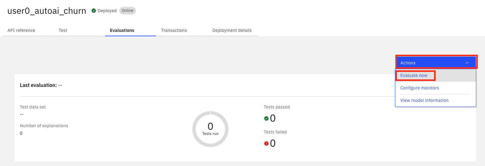
-
On the Import test data page, choose from CSV file and click Browse

-
Select the customer_churn_openscale_evaluation.csv file that you downloaded at the beginning of the workshop. Then click Upload and evaluate.
Info
OpenScale will upload the data, run scoring against it and compare the model prediction to the labeled result to compute an overall quality score. It will also run the Fairness monitor to detect any fairness violations. Once the evaluation complete, you get a quick view in the dashboard of the Fairness and Quality results.
-
Check the results of the evaluation. in the example below, it shows no alerts Quality, meaning the model meets or exceeds the required thresholds set for those monitors. However, there's an alert for Fairness and two alerts for Drift.
Warning
Note that your actual results may be different, and you may see different alerts.
Reviewing Fairness and Explainability
-
Click the arrow next to the Fairness monitor to review the fairness results further.
-
In this case, no bias was detected in the GENDER feature.
-
Click the Monitored attribute option and change it to the AGE feature.
Info
In this case, a potential bias was found in the model against people in the first age group. Note that the thresholds we set in our monitors are key to decide when OpenScale is going to trigger alerts.
-
Click the View payload transactions button.
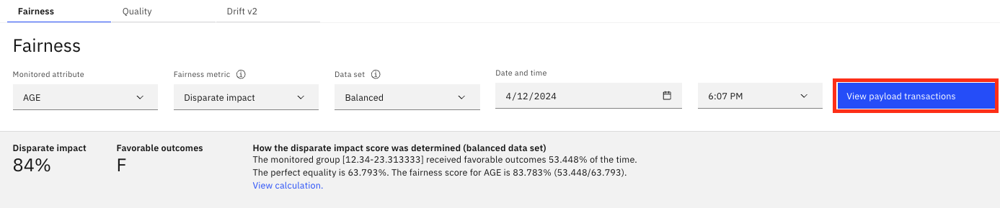
-
These are the transactions that were evaluated. Choose one and click Explain prediction. In this example, we'll choose one with individual bias detected.
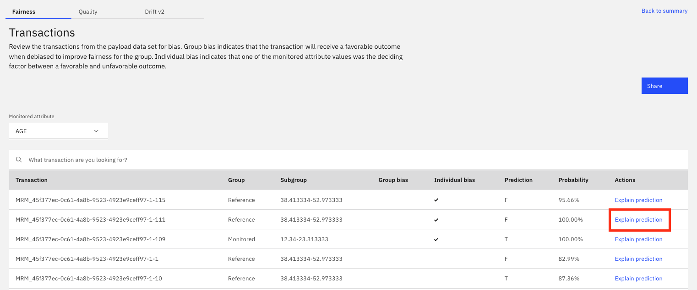
-
This graph explains how much each feature impacted the decision.
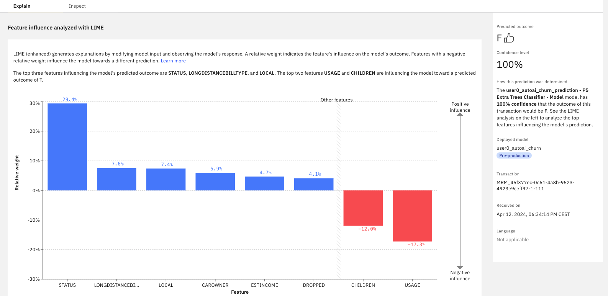
Go to tab Inspect.
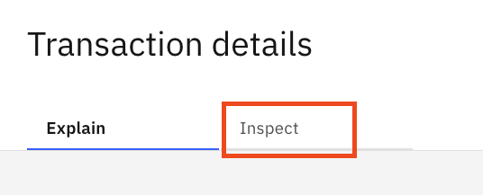
-
In this section you can investigate how features should change for the prediction outcome to change. In the example below, this customer is predicted to churn (Predicted Outcom is T = True). Click Run analysis.
-
In this case, the STATUS feature should change from 'M' to 'S' for the model to predict no-churn instead of churn.
-
You can also investigate what the prediction would be if a specific feature changes to another value. For example, let's change the AGE from 46 to 18. Then, click Score new values to check what would be predicted in that case:
-
The prediction would change to no-churn in that case, with a confidence of 60%.
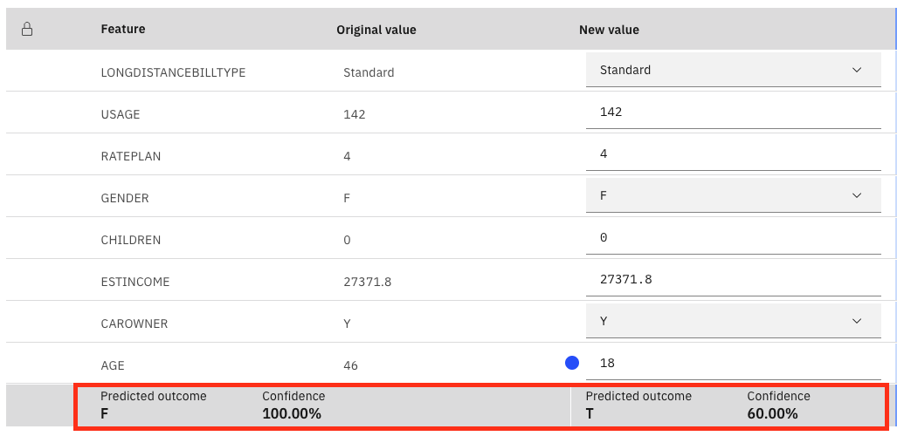
Reviewing Drift
-
Go back to your deployment by clicking its name in the breadcrumb menu.
-
Go to the Evaluations tab then click the arrow in the Drift v2 section to open the drift test details.
-
Review the charts in this page. First, History chart.
Info
This graph shows how the drift for the prediction (output drift), the incoming/evaluation data (feature drift), and the model quality has evolved in time. Only one evaluation was run in this case.
-
Scroll down to the Output drift chart. Note that you can see drift charts for each predicted outcome by using the dropdown option:
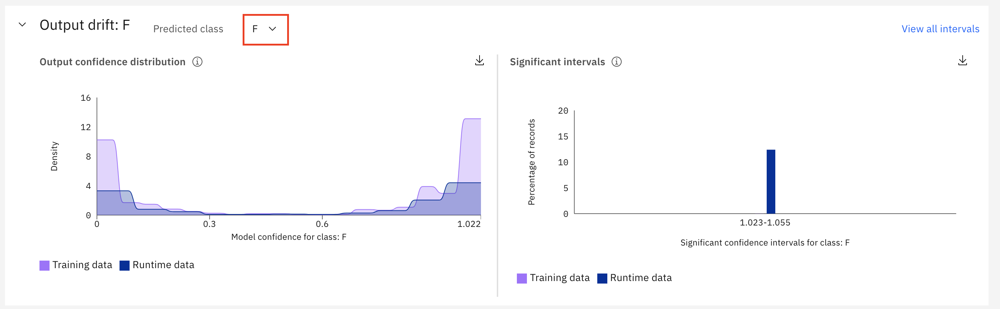
Info
This graph shows how the prediction of the model has drifted from the training data to the input/evaluation data.
In this case, we have a drift issue. We can investigate it further using the following graphs.
-
Scroll down to the Feature drift chart.
Info
This graph shows how the input/evaluated data has changed incomparison with the data that was used to train the model. This is useful to get an idea on which changes in data may have affected the model prediction accuracy, reducing analysis and investigation time.
In this example, the feature LOCAL has significant changes.
-
Scroll down to the following charts.
Info
For each feature with drift, the amount of changes for each range of values is shown. Besides, the evolution this feature's drift over time is shown in the second graph.
Tracking the model monitoring
-
Go to the AI use cases menu.

-
Open your use case.
-
Go to the Lifecycle tab. Note that the AI Use Case has advanced from Testing to the Validation phase. The red icon shows that there are issues in the AI Monitors of this model. Clicking the red icon shows which monitors have issues.
-
Click the deployment name to open the details of the monitoring:
-
Take your time to review the results included in this phase.
Info
You've reached the end of this lab.